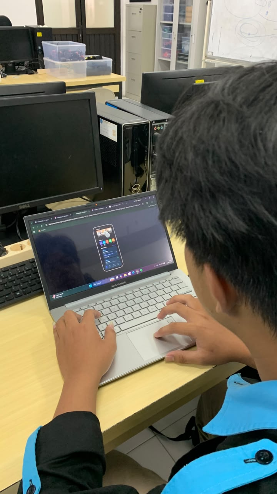
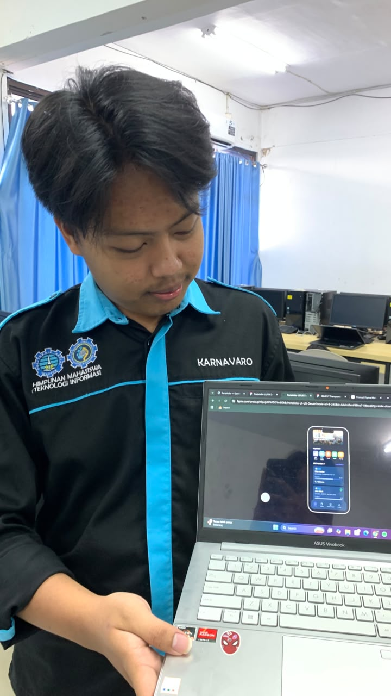

Problem Statement
Pengguna membutuhkan layanan transportasi online dengan aplikasi bernavigasi simpel, tarif yang terjangkau dan stabil, serta jaminan kenyamanan perjalanan melalui armada yang sesuai dan driver yang ramah.
UI/UX Case Study • Gamification Theme
Aplikasi transportasi online dengan navigasi simpel, harga lebih transparan, dan pengalaman perjalanan yang nyaman melalui pendekatan desain berbasis gamifikasi.
Tools: Figma, Canva
Durasi: 4 Minggu
Jemput hadir sebagai solusi transportasi online yang berfokus pada kemudahan penggunaan, transparansi harga, dan kenyamanan perjalanan. Aplikasi ini dirancang berdasarkan hasil riset pengguna yang menginginkan layanan transportasi yang lebih sederhana namun tetap lengkap.
Dengan pendekatan desain berbasis gamifikasi, pengguna dapat menikmati pengalaman yang lebih interaktif, mudah dipahami, dan menyenangkan tanpa mengurangi efisiensi dalam melakukan pemesanan perjalanan.
Estimasi harga detail ditampilkan sejak awal sehingga pengguna mengetahui biaya perjalanan secara jelas sebelum melakukan pemesanan.
Driver ramah, armada terverifikasi, serta alur pemesanan yang mudah dipahami untuk semua kalangan pengguna.
Tampilan modern dengan elemen gamifikasi yang membuat interaksi lebih menarik, menyenangkan, dan tidak membosankan.
Shortcut tujuan favorit dan proses pemesanan yang lebih cepat untuk menghemat waktu pengguna.
Final Result
Stage 01
Stage 02
Pengguna membutuhkan layanan transportasi online dengan aplikasi bernavigasi simpel, tarif yang terjangkau dan stabil, serta jaminan kenyamanan perjalanan melalui armada yang sesuai dan driver yang ramah.
Stage 03
Stage 04
Saya berfokus pada masalah inti: memastikan kemudahan dan kenyamanan pemesanan.
Contoh Task: "Anda ingin segera berangkat ke suatu tujuan namun tidak memiliki kendaraan dan banyak waktu untuk mencari alamat yang ingin dituju."


Mahasiswa, 19 Tahun
"Jarang menggunakan aplikasi transportasi online"Q1: Apakah mudah menemukan fitur shortcut tujuan favorit?
Cukup mudah untuk menemukan fitur tersebut, karena aplikasi ini langsung menampilkan fitur tujuan favorit pada halaman beranda.
Q2: Bagian mana yang paling membingungkan?
Selama pengujiannya, pengguna merasa bahwa proses pencarian driver agak rumit dan membutuhkan langkah tambahan.
Before: Proses pencarian driver terlalu rumit.
After: Proses pencarian driver disederhanakan dengan menambahkan opsi pencarian berdasarkan lokasi, driver favorit, dan driver dengan rating tertinggi.
Prototype aplikasi “Jemput” berhasil diuji secara fungsional untuk kebutuhan dasar transportasi. Aplikasi mudah digunakan dan alurnya jelas. Pengembangan UI selanjutnya dapat berfokus pada penambahan fitur sekunder seperti notifikasi dan layanan non-transportasi agar lebih kompetitif.
Weekly Quest